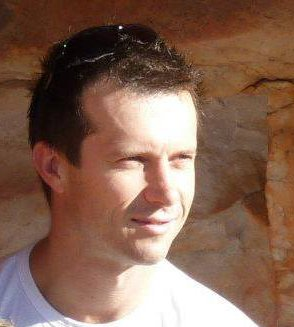

Ruby, Rails and React pay the bills while keeping it fun. Elixir & Phoenix keeps me interested in the future of web development.
He worked exactly as specified, communicated clearly and executed fast. I'd definitely hire him again and probably will if this project goes to stage 2. I could not think of a better-skilled communicator who handles responsibility that well.
Till Carlos - Founder of Maerketing.com

De Wet's honest and simple approach to problem solving was a breath of fresh air. The work was completed at a very high standard and best of all within timeframe and budget.
Anton Cuyler - CEO Sozo Foundation
De Wet is a progressive leader and trainer in the IT field. He has a proven track record in training and mentoring people from complete novices into highly sought after employees. His ability to work cross culturally has stood him in good stead in the South African context. His ability to pass on technical skills and the soft skills is a unique and valuable mix. De Wet is a person of great resourcefulness and integrity. He will always get the job done!
Sarah Murphy - Team Lead YWAM
De Wet is a hard working, integral problem solver. He has patiently mentored young people for years in both skill and character. With Dewet, you are receiving dedication, reliability, and competence.
Chris Lautsbaugh - Former Employer